Aleks i mapa sa blagom
Aleks voli da istražuje!
Obožava da leti iznad planina prekrivenih snegom …
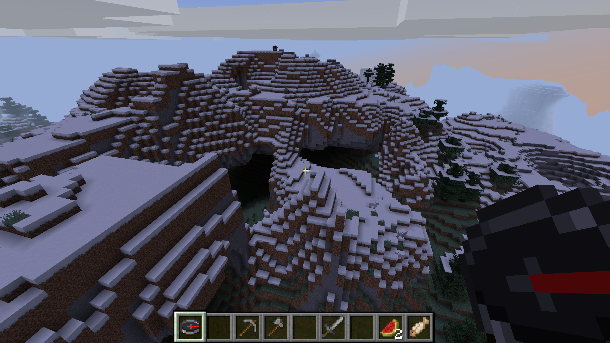
… da roni čudesnim dubinama okeana …
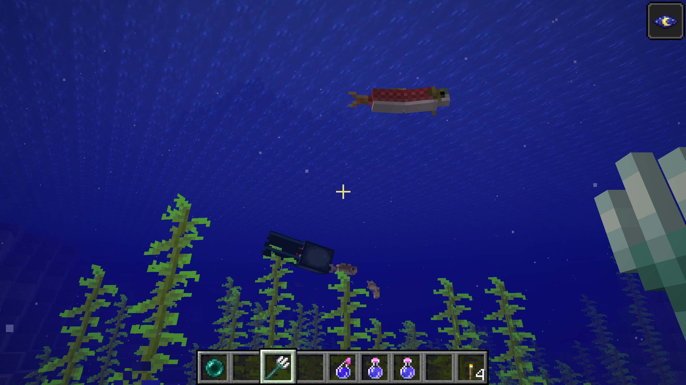
… pa i da hara strašnim pećinama u kojima lava kulja!
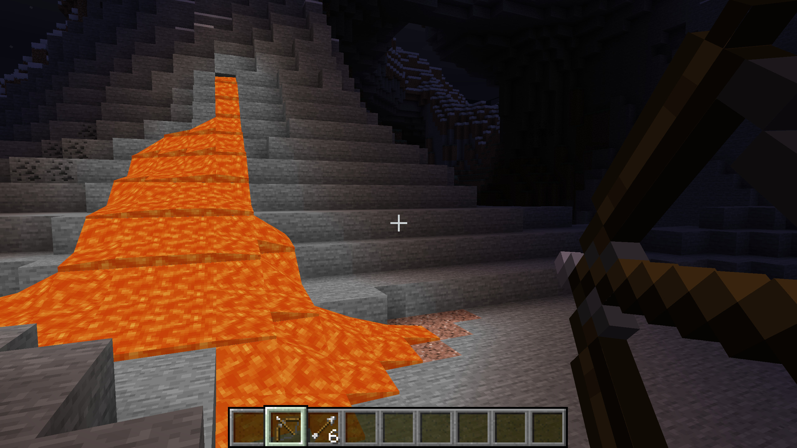
Mnogo voli da mazi i hrani životinje prerije, pa ponekad i da utepa neku, kako bi napravio krevet koji bi poneo sa sobom da ga prati na dugim avanturama
Aleks uživa u obilaženju sela i u priči i razmeni dobara sa lokalcima …
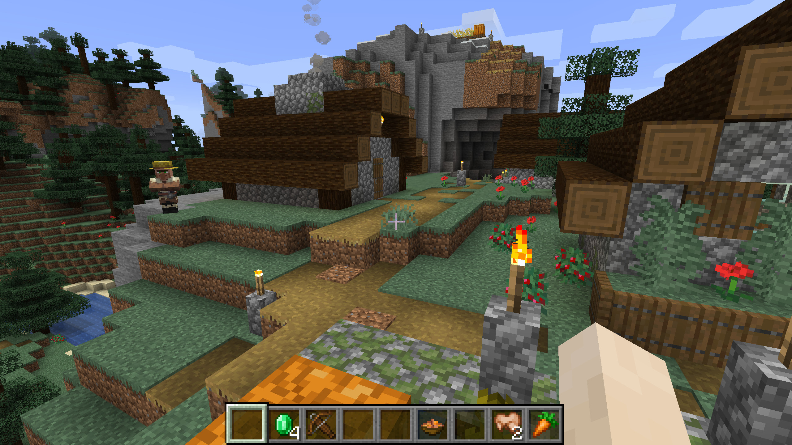
Uvek mu je smešno kako neki seljani nude bezvredne stvari u zamenu za dragulje, ali često je i zadovoljan ponudom i samom trgovinom
Ipak, najviše od svega Aleks voli da traži skriveno blago …
Jednoga dana, šetajući po obroncima starog razrušenog hrama – Aleks je naišao na kovčeg!
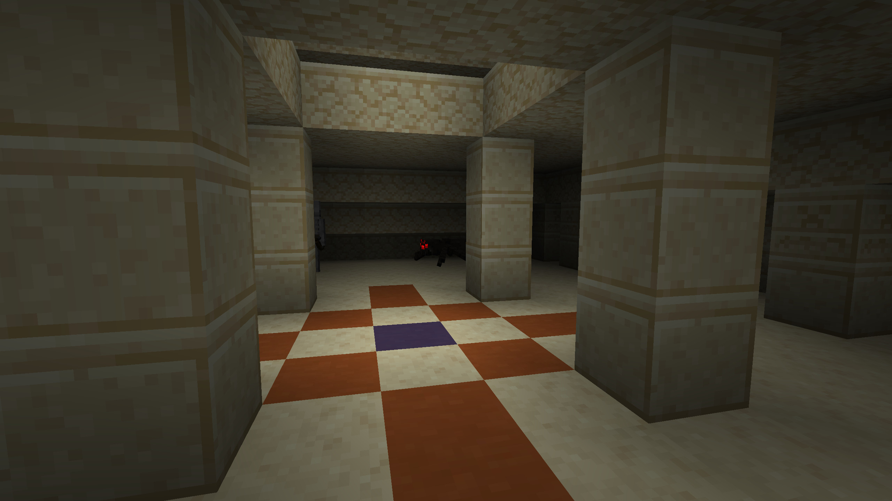
U njemu je našao nekoliko krompira, paprikaš koji mu je delovao sumnjivo (ko zna koliko je tu stajao, mislio je on), stari drveni luk i jedan papir
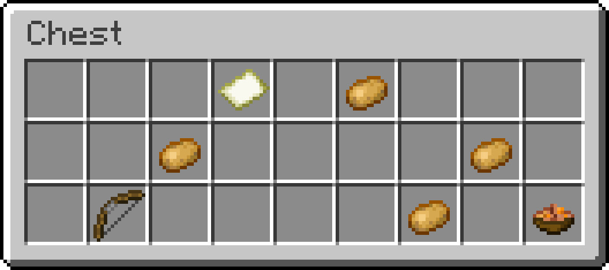
Prvo je pomislio da je to samo prazan list, ali kada ga je otvorio – shvatio je da je to ustvari mapa zakopanog blaga!
Nova avantura počinje, radovao se!
Pre nego što je krenuo u potragu, Aleks je odlučio da pronađe Stiva, kako bi njih dvojica zajedno išli u avanturu …
Vratio se u selo gde su bili zajedno poslednji put, ali Stiv nije bio tamo …
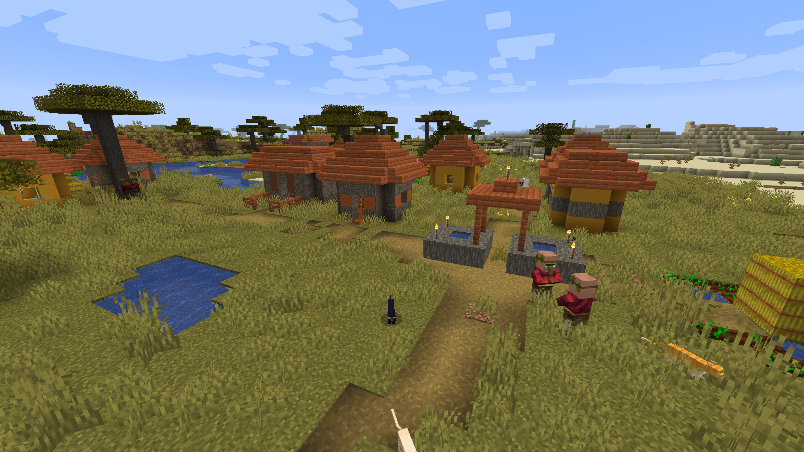
Vratio se do kuće sa bazenom koju su zajedno pravili, ali Stiv nije bio tamo …
Otišao je do piramide prekrivene lavom koju su nekad izgradili, ali Stiv nije bio ni tamo …
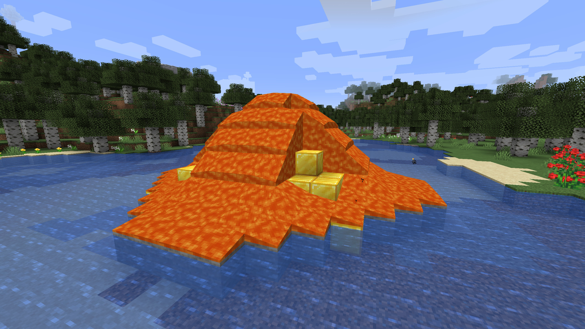
Obišao je i štalu sa kravama i konjima …
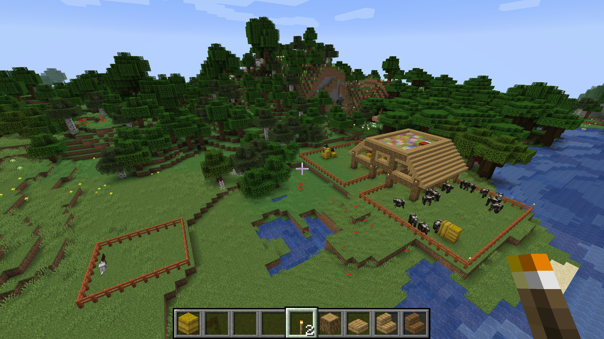
… kuću na drvetu sa tunelom i čarobnom sobom pod vodom …
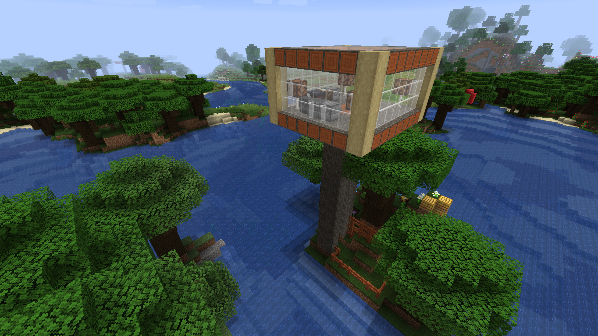
… rudnik dijamanata koji su često zajedno obilazili, pa i nekolicinu obližnjih planina sa kojih su grudvama gađali pauke …
Ni traga od Stiva!
Aleks je bio tužan, on nije želeo sam da ide u avanturu …
Ipak, posle celodnevne potrage za drugarom – odlučio je da je vreme da se zaputi u pustolovinu sam!
Spakovao je par jabuka u ranac, komad pečene piletine, nekoliko baklji, dva-tri napitka i svoj dijamansti mač i hrabro se upustio u nepoznato
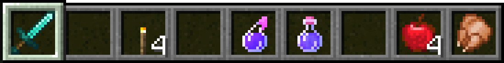
Kretao se levo-desno, napred-nazad, gore-dole, unazad-naglavačke, preko glave-unatraške, sve sa ciljem da što pre stigne do mesta obeleženog znakom X
Leteo je preko zavejanih brda u susret mećavi …
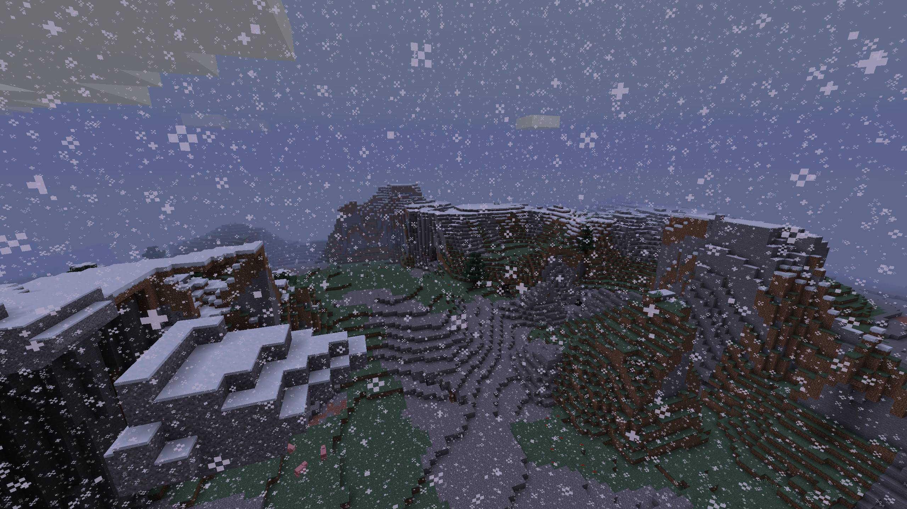
Spretno se šunjao pored ekplodirajućih zombija …
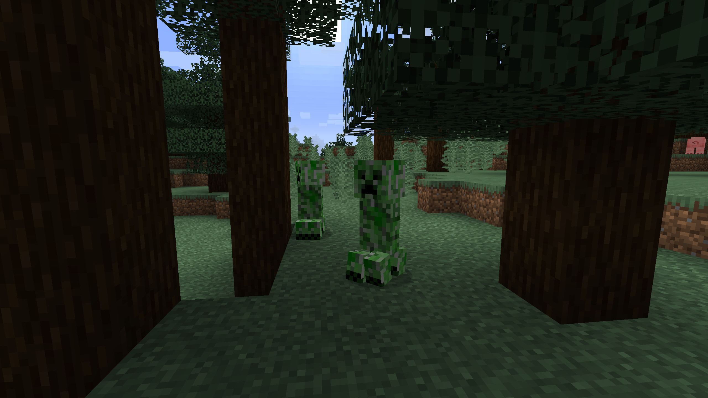
Bauljao je močvarnim tlom po najgorim pljuskovima …
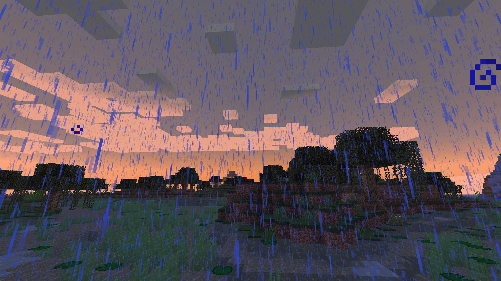
… sve dok jednog ranog jutra nije naišao na ostrvo ucrtano na mapi!
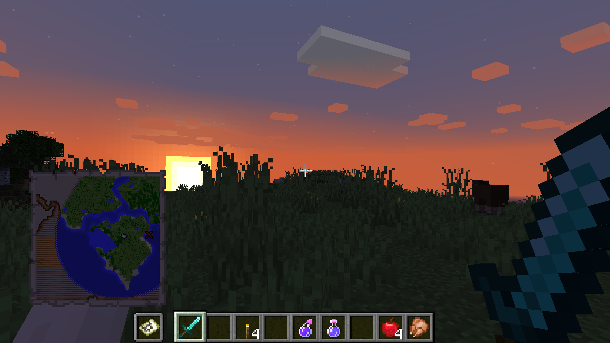
Kovčeg je naizgled bio sakriven pod vodom, na ivici starog zakopanog hrama
Aleks je na sebe bacio napitak za gledanje po mraku, da bolje vidi pod vodom, popio je napitak koji omogućava da dugo izdrži bez vazduha i najzad zaronio
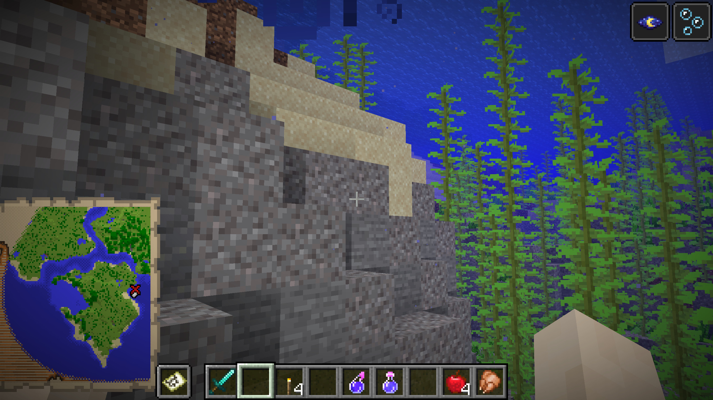
Usput je vešto izbegao dve lignje, hrabro se borio sa ribom čuvarem i najzad stigao do mesta naznačenog na mapi
Na prvi pogled nije bilo blaga nigde, ali obzirom da je Aleks bio veoma uporan, uspeo je da ga pronađe, sakrivenog ispod masivnih naslaga peska
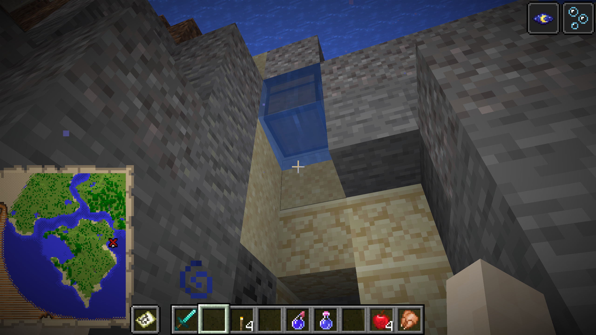
Kovčeg je bilo puno dijamanata, zlatnih poluga i smaragda, tu su bili i dijamantski oklop, kaciga i začarani luk, pa čak i retki dragulj „Srce mora“
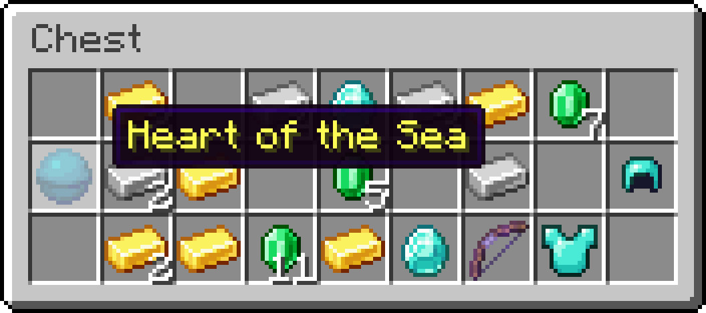
Iako mu je bilo žao što nije zajedno sa Stivom uživao u ovoj pustolovini, shvatio je da može i sam da se lepo zabavi i jedva je čekao da se vrati nazad i da mu ispriča sve o svojoj uzbudljivoj avanturi